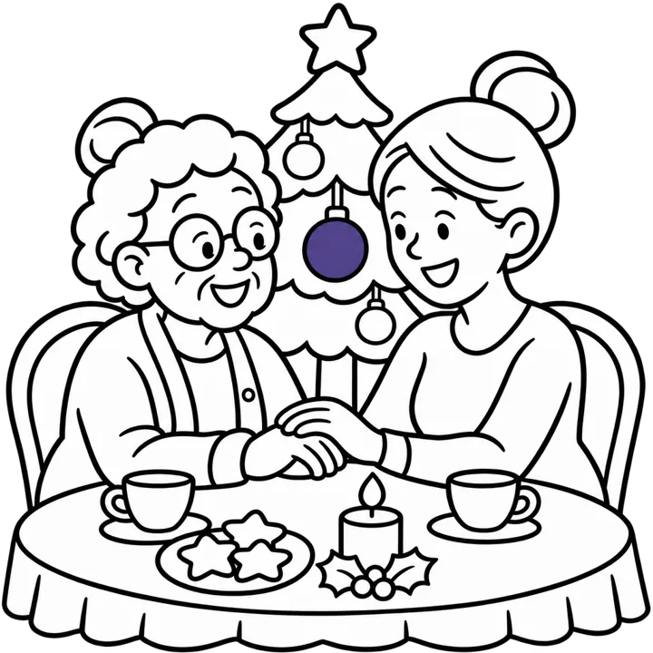

Weihnachten mit Demenz: Was sage ich jetzt?
Schreib, was passiert. Du bekommst sofort ruhige Worte.
Kostenlos, ohne Anmeldung. Es gelten die Nutzungsbedingungen und der Datenschutz.
Einen Moment.
- Ich lese deine Situation.
- Ich suche ruhige Worte.
- Ich prüfe die Antwort.
Vorschlag der KI. Bitte prüfe ihn. Kein ärztlicher Rat. Im Notfall 112.
So hast du an jedem Feiertag den passenden Satz
- Frag so oft du willst. Auch Nachfragen.
- Speichere gute Sätze und teile sie mit der Familie.
- Im Web und in der iPhone-App.
Du siehst den Preis, bevor du startest.
Typische Momente an Weihnachten
Tipp einen Moment an. Du bekommst sofort einen Satz.
6 kleine Tricks für ein ruhiges Fest
- Kleine Runde. Lieber wenige Gäste. Oder zwei kurze Besuche statt einer großen Feier.
- Ein ruhiger Raum. Dort kann sie sich ausruhen, wenn es zu laut wird.
- Namen sagen. „Hallo Mama, ich bin Lena, deine Enkelin.“
- Eine kleine Aufgabe. Plätzchen verzieren oder Servietten falten.
- Früh feiern. Am Nachmittag statt spät am Abend.
- Alte Lieder. „Stille Nacht“ kennen viele noch Wort für Wort.
Schick die Seite der Familie. Dann wissen alle, was sie sagen können.
Für alle Feiertage den passenden Satz
- Schreib jede Situation in deinen Worten.
- Du bekommst sofort ruhige Sätze und kleine Schritte.
- Frag nach, so oft du willst.
Du siehst den Preis, bevor du startest. Online kündbar.
Fragen
Sollen wir Weihnachten feiern, wenn Mama Demenz hat?
Ja, aber kleiner und ruhiger. Bekannte Lieder, Kerzen und Plätzchen wecken oft gute Gefühle. Plane Pausen ein.
Was sage ich, wenn sie nach einem Verstorbenen fragt?
Sprich ruhig über die Person und frag nach schönen Erinnerungen. Schreib die Situation oben ein. Dann bekommst du einen passenden Satz.
Kostet Demenz Coach etwas?
Eine Antwort auf dieser Seite ist kostenlos. Danach kannst du 7 Tage kostenlos testen. Den Preis siehst du vor dem Start.